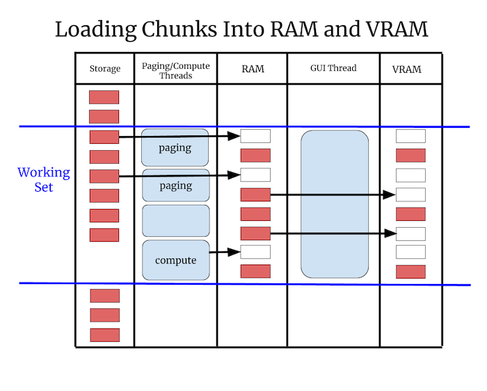
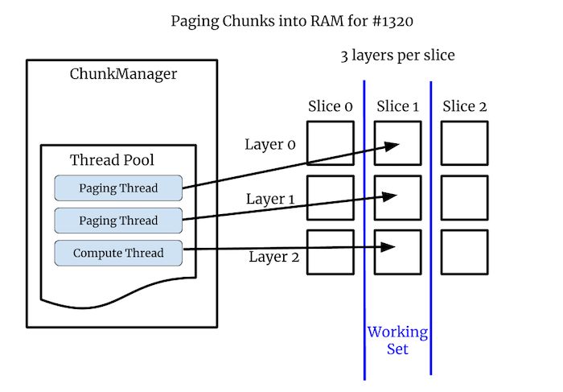

Rendering in napari¶
Status¶
As of September 2020, we are in the process of merging an experimental
implementation of asynchronous rendering for the Image layer into master,
so that Napari user’s can optionally toggle it on and experiment with it.
Initially the asynchronous rendering is only fully implemented for
single-scale images, support for multi-scale images is partial. Later we
plan to add full support for chunked multi-scale images, 3D images, and
eventually asynchronous rendering support for all layer types.
Framerate¶
The ideal framerate for a graphics application is 60Hz because this is the most common refresh rate for screens. The goal is that every time the screen refreshes the renderer can draw something new, which means anything in motion will appear to move smoothly, such as when panning or zooming the camera. If 60Hz cannot be achieved the application should draw as fast as possible, because the user experience degrades rapidly as the framerate gets slower:
Framerate |
Milliseconds |
User Experience |
|---|---|---|
60Hz |
16.7 |
Great |
30Hz |
33.3 |
Good |
20Hz |
50 |
Acceptable |
10Hz |
100 |
Bad |
5Hz |
200 |
Unusable |
The issue is not just aesthetic. Manipulating user interface elements like sliders becomes almost impossible if the framerate is really slow, and it can be a deeply frustrating experience for the user as they struggle to use the application. Furthermore, if Napari does not respond to events at all for a few seconds, the operating system might indicate to the user that the application is crashing, for example MacOS will show the “spinning wheel of death”.
A fast average framerate is important, but it’s also important that Napari does not have even isolated slow frames, and does not have a framerate that bounces around. A jumpy framerate leads to something called jank. For the best user experience we want a framerate that’s fast, but also one that’s consistently fast.
Array-like Interface¶
Napari renders data out of an array-like interface. The data can owned by
any object that supports numpy’s slicing syntax. This is flexible and
powerful, but it means that simple array accesses can result in the
execution of arbitrary code, code that may perform IO or computations,
using Dask or some other means. This means array
accesses can take an arbitrary long time to complete.
Asynchronous Rendering¶
Since we don’t know how long an array access will take, and we never want the GUI thread to block, we cannot access arrays in the GUI thread unless we know they are fully in memory. Instead, Napari’s rendering has to be done asynchronously.
The renderer will only draw data that is fully in memory, so that it never blocks on IO or computations. Meanwhile, more data will be loaded into memory in the background. The frame after the data is loaded the renderer will draw the new data along with the previously drawn data. This necessarily means that Napari will sometimes draw partially loaded data. For example, it might draw only portions of a full image or draw images that are blurry, until the data has fully loaded.
Issues that Napari has without asynchronous rendering include #845, #1300, and #1320.
VRAM¶
Even if the data is loaded into RAM fully in the background, Napari still needs to move the data from RAM into VRAM. Unlike the load into RAM, the transfer into VRAM must be done by the GUI thread. If the data is too large then loading it will cause a slow frame that the user will notice.
This leads to the requirement that all data needs to be broken into chunks, where a chunk is a deliberately vague term for a portion of the data that Napari can load and render independently. The chunk size needs to be small enough that the renderer can at least load one chunk per frame into VRAM without a framerate glitch, so that over time all chunks can be loaded into VRAM smoothly.
Renderer Requirements¶
The above discussion leads to two rigid requirements for rendering:
Never call
asarrayon user data from the GUI thread, since we don’t know what it will do or how long it will take.Always break data into chunks. The exact maximum chunk size is TBD.
Render Algorithm¶
The renderer computes a working set of chunks based on the current view. The working set is the set of chunks that we need to draw in order to depict the current view of the data. The renderer will step through every chunk in the working set and do one of these three things:
Case |
Action |
|---|---|
Chunk is in VRAM |
Render the chunk |
Chunk is in RAM but not VRAM |
Transfer the chunk to VRAM if there is time |
Chunk is not in RAM |
Ask the ChunkLoader to load the chunk |
The important thing about this algorithm is that it never blocks. It draws what it can draw without blocking, and then loads more data so that it can draw more in the future.
Chunks and Partial Rendering¶
A chunk is simply a portion of what we need to load and render. A chunk will often be a region of space like a tile or a sub-volume, but it could be some other part of the whole, such as a layer or some portion of the geometry.
If only a subset of the desired chunks are in memory, then Napari can only render that portion of the data. However, rendering a portion of the data quickly is often much better for the user than waiting until the data is fully loaded. Users can often interpret and navigate their data even if they can only see part of it. Thus asynchronous rendering with partial draws can vastly speed up the user’s ability to analyze and interact with their data.
Chunked File Formats¶
Chunks will often be blocks of contiguous memory inside a chunked file format like Zarr, and exposed by an API like Dask.
If an image is stored without chunks then reading a 2D region of the image might require many different read operations, since the bytes for that region are spread throughout the linear file, interspersed with the bytes from other geographic regions. In contrast with a chunked file you can read a rectangular region with a single linear read operation.
For 3D images the chunks are 3D sub-volumes instead of 2D tiles, but the benefits are exactly the same. Neuroglancer recommends that data is stored in 64x64x64 chunks, which means that each chunk contains 262,144 voxels. Those 256k voxels can be read with one read operation. Using cubic chunks is nice because you get the same performance whether you are viewing the data in XY, XZ or YZ orientations. It’s also nice because you can scroll through slices quickly since on average 32 slices above and below your current location are already in RAM.
Render Chunks¶
If a chunked file format is available, and those chunks are reasonably sized, then Napari can use those chunks for rendering. If chunks are not available, for example with issue #1300, or the chunks are too large, then Napari will have to break the data into render chunks itself.
Note that with issue #1320 the images are small so they are not chunked, but in that issue there are 3 image layers per slice. In that case the image layers are our chunks. In general we can get creative with chunks, they can be spatial or non-spatial subdivisions, basically anything we want. As long as something can be loaded and drawn independently it can be a chunk.
Loading into RAM and VRAM¶
The working set is the set of chunks we need to draw for a given view of the data. Each frame Napari will draw only the chunks in the working set which are in VRAM. Meanwhile, in the background it will load more chunks into RAM, and transfer data from RAM and then into VRAM. This two-step paging process into RAM and then into VRAM is what will give Napari a fast and consistently fast framerate, even when viewing huge or slow-loading data.

When the rendering process is viewed as a timeline, the rendering thread has regularly spaced frames, while the IO and compute threads load data into RAM in parallel. When a paging or compute operation finishes, it puts the data into RAM and marks it as available, so the renderer can use it during the next frame.

Example: Computed Layers¶
In #1320 the images are not chunked since they are very small, but there are 3 layers per slice. These per-slice layers are our chunks. Two layers are coming off disk quickly, while one layer is computed, and that can take some time.
Without asynchronous rendering we did not draw any of the layers until the slowest one was computed. With asynchronous rendering the user can scroll through the paged layers quickly, and then pause a bit to allow the computed layer to load in. Asynchronous rendering greatly improves the user’s experience in this case.

Octree¶
Eventually we expect that Napari will load data into an octree and will render the data out of this octree. The octree is spatial data structure that divides space into regions, but can also hold many different representations of the data, each one at a different resolution or level of detail.
An octree is similar to Napari’s current image pyramids, but the spatial decomposition element. See Apple’s nice illustration of an octree:

We can use our octree for 2D images by only setting four children per node instead of eight. This effectively makes it a quadtree. The memory wasted by not using the other four children is minimal relative to the size of the data, and we’d rather use the same data structure and code for 2D and 3D, so we will use an octree in all cases.
Beyond Images¶
Images are the marquee data type for Napari, but Napari can also display
geometry such as points, shapes and meshes. The ChunkLoader and octree
should work for any layer type, but there will be additional challenges to
make things work well with non-image layers:
Downsampling images is fast and well understood, but “downsampling” geometry is called decimation and it can be slow and complicated. Also there is not one definitive decimation, there will be complicated trade-offs for speed and quality.
Sometimes we will to want downsample geometry into a format that represents the data but does not look like the data. For example we might want to display a heatmap instead of millions of tiny points. This will require new code we did not need for the image layers.
With images the data density is spatially uniform but with geometry there might be pockets of super high density data. For example the data might have millions of points or triangles in a tiny geographic area. This might tax the rendering in new ways that images did not.
Appendix¶
A. Threads and Processes¶
By default the ChunkLoader uses a concurrent.futures thread pool.
Threads are fast and simple and well understood. All threads in a process
can access the same process memory, so nothing needs to be serialized or
copied.
However, a drawback of using threads in Python is that only one thread can hold the Global Interpreter Lock (GIL) at a time. This means two threads cannot execute Python code at the same time.
This is not as bad as it sounds, because quite often Python threads will release the GIL when doing IO or compute-intensive operations, if those operations are implemented in C/C++. Many scipy packages do their heaviest computations in C/C++. If the GIL is released those threads can run simultaneously, since Python threads are first-class Operating Systems threads.
However, if you do need to run Python bytecode fully in parallel, it might
be necessary to use a concurrent.futures process pool instead of a thread
pool. The downside of using processes is that memory is not shared between
processes by default, so the arguments to and from the worker process need
to be serialized, and not all objects can be easily serialized.
The Dask developers have extensive experience with serialization, and their library contains it’s own serialization routines. Long term we might decide that Napari should only support threads internally, and if you need processes you should use Napari with Dask. Basically we might outsource multi-processing to Dask. How exactly Napari will interoperate with Dask is to be determined.
B. Number of Workers¶
How many worker threads or processes should we use? The optimal number will depend on the hardware, but it also might depend on the workload. One thread per core is a reasonable starting point, but a different number of workers might be more efficient in certain situations. We will start with a reasonable default value and let the user configure the number manually if desired. Long term maybe we can set the number of workers automatically or even adjust it dynamically.
C. asyncio¶
Python also has a newer concurrency mechanism called
asyncio which is
different from threads or processes, asyncio tasks are similar to
co-routines in other languages. The advantage of asyncio tasks is they are
much lighter weight than threads.
For example, in theory you can have tens of thousands of concurrent
asyncio tasks in progress at the same time. They generally don’t run in
parallel, but they can all be in progress in various states of completion
and worked on round-robin. While we have no current plans to use asyncio
for rendering, we should keep in mind that it exists and it might be
something we can use down the road.
D. VRAM and Vispy¶
With OpenGL you cannot directly manage VRAM. Instead we will implicitly control what’s in VRAM based on what vispy objects exist and what objects we are drawing.
For example, if we page data into memory, but do not draw it, then it’s in
RAM but it’s not in VRAM. If we then create a vispy object for that chunk
and draw it, the data needed to draw that chunk will necessarily be put
into VRAM by vispy and OpenGL.
Since it takes time to copy data into VRAM, we may need to throttle how many new vispy objects we create each frame. For example, we might find that we can only draw two or three new chunks per frame. So if we load ten chunks, we might need to page that data into VRAM over four or five frames.